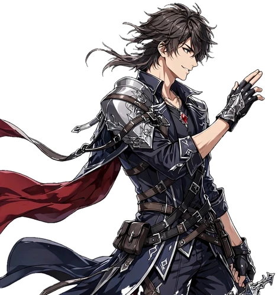
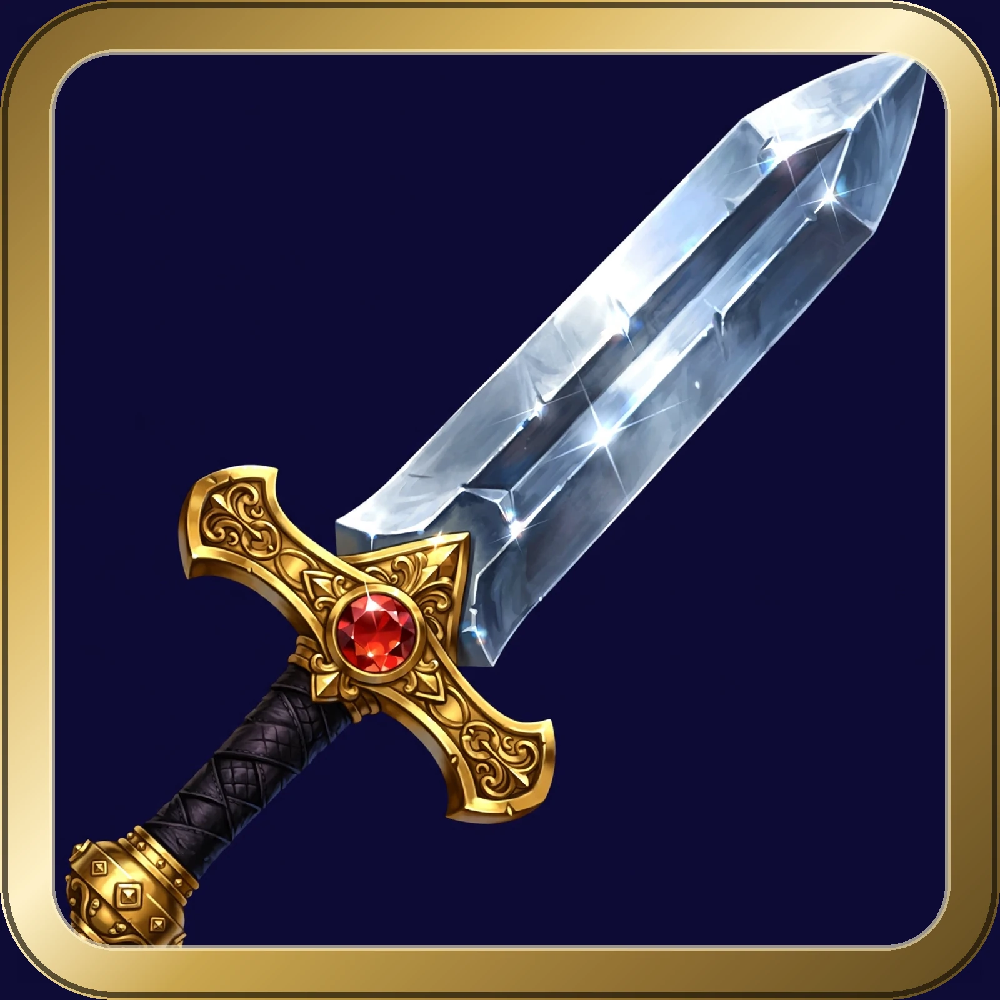
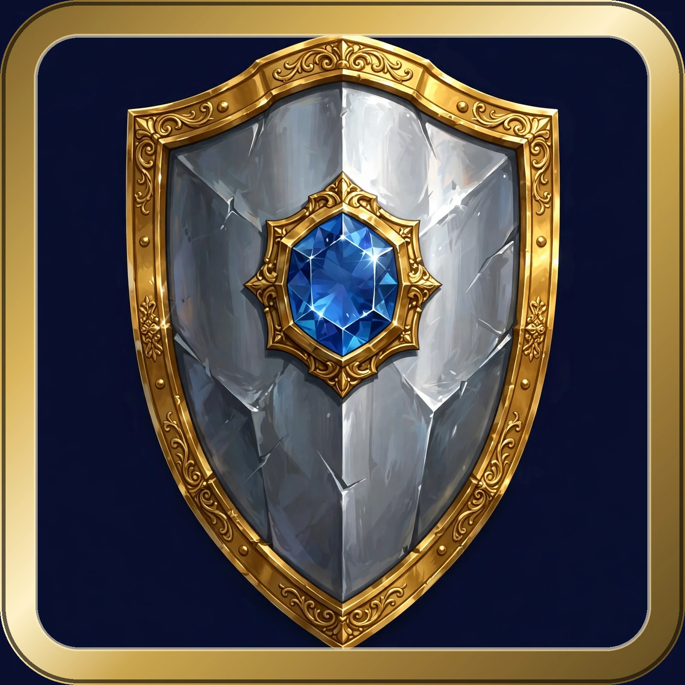
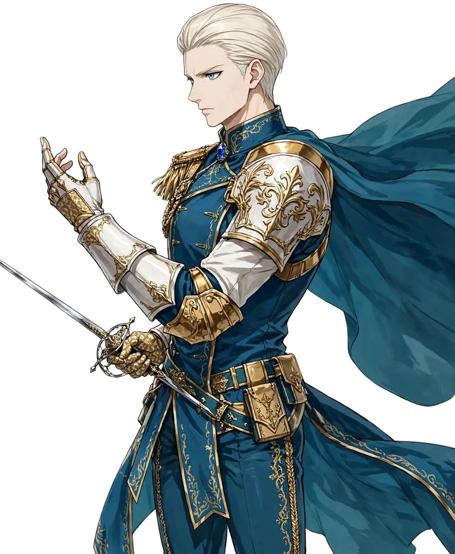
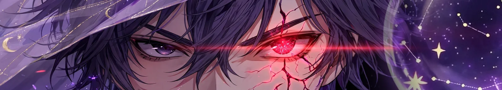
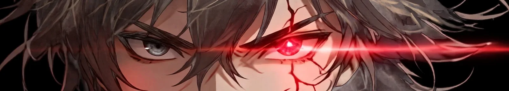
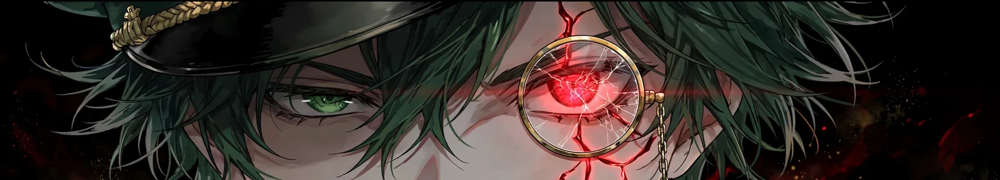
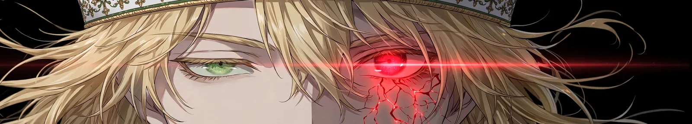
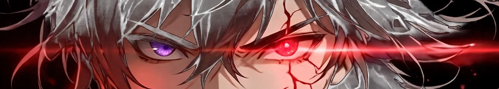
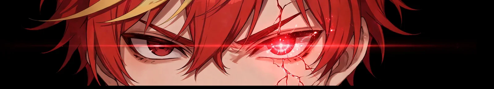

150

150
チュートリアル
勝ち
勝利
メニュー
説明
何をするゲーム？
宝石パネルを合体させて数字を育て、そのパネルを「攻め」と「守り」に積んで殴り合う対戦パズル。相手のHP150を先に0にしたら勝ち。
1ターンの流れ
ターンは 布陣（入れ替え）→ 覚醒（必殺技（眼））→ 攻勢（攻撃を積む）→ 守勢（防御を積む）→ 激突（攻撃が発動）の5フェイズ。両者が交互に進める。画面端の旗が今のフェイズを教えてくれる。
布陣 ― 合体で育てる
ドラッグで隣り合うパネルを1手だけ入れ替えられる。同じ色がそろうと合体して数字が合算され、大きく育つ。合体で空いたマスには新しいパネルが補充される。
覚醒 ― 必殺技（眼）
同じ色を3個合体させると必殺技（眼）が出現する。覚醒で眼をタップすると、キャラ専用の必殺技が発動する。効果はキャラごとに違う。
攻勢・守勢・激突
攻勢で積んだ攻撃は、そのターンの激突ですぐ発動する。守勢で積んだ防御は相手のターンまで残り、相手の攻撃と差し引きされる。差し引きで余った分だけがダメージになる。
先手の注意 ― 攻勢がない
先手の1ターン目だけ「攻勢」がなく、攻撃を積めない。先に殴ると、相手が守りを積む前に一方的に当たってしまうから。先手の初手は、守勢で守りを積んで相手のターンを迎えるのが仕事。
キャラ選択
使うキャラを選ぶ（必殺技はキャラ専用）
フレンド対戦
遊び方（予定）
① 招待を発行して相手に渡す ② 相手が招待から参加する ③ キャラを選んで1手ずつ対戦する。
準備中
フレンド対戦はこのモックではまだ接続されていません。今はCPU戦で遊べます。
ギャラリー
6人のキャラと必殺技（下段は覚醒カットイン）
カマル占い師黒星の気まぐれランダムなパネルを黒50に

ガレス軽騎士再鍛の試練ランダム4枚に+10

ユリウス策士参謀既定路線相手の攻勢・守勢を飛ばす

アンセルム神官救済の福音HPを50回復

オルフェ貴公子魔術師虚無の欠伸相手の盤面を全部0＋防御消去

ソル若き王一色王国全パネルを1色に
